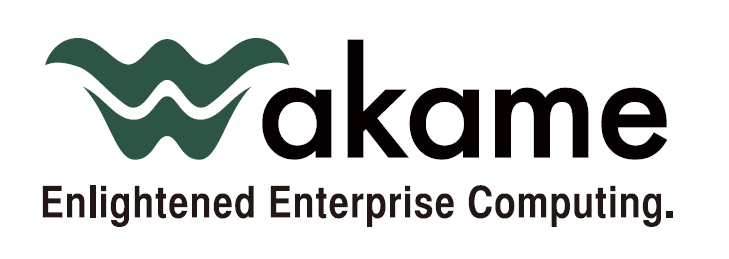

What is Wakame-vdc?
There are a couple of ways you could answer this question.
-
Wakame-vdc is a virtual data center. You may have heard of virtual machines. Those virtualize a single computer. What Wakame-vdc does is virtualize an entire data center. More on that on the Concept page.
-
Wakame-vdc is an IaaS (Infrastructure as a Service) cloud computing framework. Basically you can set it up and offer server infrastructure "up in the cloud". Users can control Wakame-vdc through a web browser. That means you can for example set up Wakame-vdc and let users rent virtual servers from you. Some of the companies currently using Wakame-vdc do just that.
Wakame-vdc is free open source software. The source is freely available on Github. Everybody is welcome to contribute to development and the software can be freely distributed. (Within the rules of the LGPL license)
The following companies are currently using Wakame-vdc in production.
- Kyushu Electric Power Co., Ltd.
- National Institute of Informatics
- NTT PC Communications
- Kyocera Communication Systems Co., Ltd.
Don't hesitate to let us know if you also use Wakame-vdc.
Quick Start
Wakame-vdc pre-installed in VirtualBox
This is the fastest most painless way to get yourself a working Wakame-vdc environment to play with. Just download the image, follow the VirtualBox setup steps and you're good to go.
Wakame-vdc install guide on a single Centos 6.6 host
This guide will teach you how to install Wakame-vdc on your own server. The end result will be similar to the VirtualBox image but since you're installing everything yourself, you will learn much more about the different components that make up Wakame-vdc.
Contact us
The best way to contact us is to send an e-mail to the Wakame Users Group on Google Groups. Please don't hesitate to ask us any questions. We realise Wakame-vdc is difficult to set up and that our documentation is limited at this time. If you want to try it out, we'll do our best to help you.
If you happen to be in Tokyo, you can also attend one of our Wakame Users Group events. They are open to everybody. Further details on http://wakameusersgroup.org.